收录于合集
中国智库研究文献计量分析（1998-2015）
作者介绍
李刚：南京大学信息管理学院教授、博导，智库研究所所长
孔放、黄松菲：南京大学信息管理学院研究生
本文原刊载于《智库评论（第一辑）》
摘要
智库研究属于交叉学科性质的研究领域，近年来由于中国特色新型智库建设成为国家战略，这一领域成为研究热点。报告利用CSSCI数据库的数据，从文献数量的年度分布、文献作者分析、文献地区分布、作者所在机构及其类型和文献主题分析等多重角度对我国智库研究的相关文献进行了计量分析，并通过运用Netdraw等社会网络分析软件，对结果进行可视化分析。
【关键词】智库 计量分析 可视化
1
引言
智库，即Think Tank，又被翻译为“思想库”、“智囊团”、“外脑”等。智库一般都是专注于公共政策咨询和研究的非营利性机构。中国特色新型智库是以战略问题和公共政策为主要研究对象、以服务党和政府科学民主依法决策为宗旨的非营利性研究咨询机构。按照智库宽松的定义，中国的智库早在春秋战国时候就出现了——稷下学宫就是当时政策辩论和政策咨询的机构。古代中国中央政府一直有养士的机构——从太学到翰林院多少都承担着政策咨询的职能。清代的幕府则为比较标准的智囊机构。不过，典型的现代智库一般都认为产生于美国，罗素·赛奇基金会（1907）、市政研究局（1907）、卡耐基基金会（1911）、洛克菲勒基金会（1913）和布鲁金斯学会（1927）等美国第一批智库，经过百年经营，美国已经成为世界第一智库大国和强国。美国对智库的研究可以追溯到1971年保罗·迪克森（Paul Dickson）撰写的《智库》一书，自那时起，智库研究成为美国政治科学、知识社会学和公共管理学交集中一个生机勃勃的领域。根据近期对Web of Knowledge和ProQuest等平台的检索，发现英文的智库方面的博士论文50余篇，专著30余种，论文200余篇。特别是宾夕法尼亚大学詹姆斯·G·麦根课题组自2007年发布“全球智库索引报告”（Global Go To Think Tank Index Report）以来，智库研究逐渐成为一个全球公共政策议题。
我国国际关系学界很早就关注西方智库发展和智库研究的进展，1982年吴天佑、傅曦编译了《美国重要思想库》，也出现了朱旭峰、王莉丽、李国强等深耕智库研究的专家。据统计1982年至2015年出版了智库方面的学术图书40余种，各种文章近1000篇。为提升分析样本的权威性，本文基于“中文社会科学引文索引” （CSSCI）数据库进行文献搜集。检索中，选用了“智库”、“思想库”为关键词对“篇名”字段在CSSCI数据库中进行检索，得到相关文献270篇。除此之外，通过以美国宾夕法尼亚大学发布的《全球智库报告2013》和《全球智库报告2014》中排名前50的具体智库名称，如“卡内基国际和平基金会”、“国际战略研究所”“传统基金会”、“兰德公司”、“俄罗斯科学院”等分别再进行“篇名”字段检索、分析得到26篇文献，所有的检索都将时间回溯到数据库收录的最早时间1998年1月1日，截止至2015年8月25日。之后将所有检索到的文献进行筛选（删除重复或与主题无关的文章），结果一共得到238篇文献。本文将以这238篇文献为基础，从各年文献量、 作者、地区、机构和主题等多角度进行进一步统计与分析。
2
年度分布
对文献的年度分布进行统计是文献计量分析的一个重要维度，文献量的年度分布能够在一定程度上反映我国智库研究的发展程度和趋势。从CSSCI收录文献最早时间1998年1月1日开始到2015年8月25日为止，检索到的文献数量分布统计如表1所示。需要特别说明的是，表格中2015年的文献数量并非是其对应的文献总数，之所以将这份数据进行统计和展示，是因为虽然2015年还未结束，但是从年初至检索截止日期，2015年的文献数量已经达到了37篇，几乎追平2014年的文献总数，这表现了中国智库研究强劲的增长趋势。各年的文献走势分布如图 1 所示，由于文献走势需要的是确切的各年文献总数，因此在走势图中并未统计2015年的文献数据。
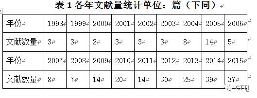
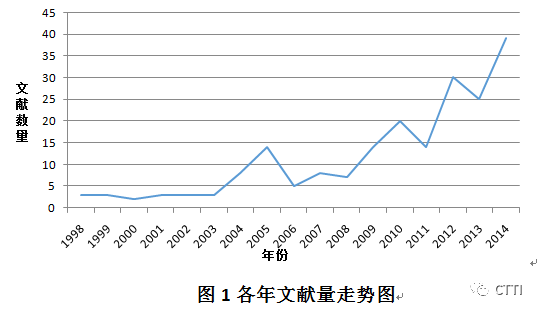
由表1和图1可知，我国智库研究的文献量总体呈现上升趋势，大致可以分为三个阶段，第一阶段是1998年到2003年间，这一阶段我国智库的研究还处在起步阶段，年度文献量都在2到3篇的幅度，发布的文章总量很少。第二阶段为2004年到2008年间，这一阶段是我国智库研究的缓慢发展时期，在此期间的年度文献数量总体有所增加，但是变化趋势不太稳定，在2005年出现了一个小高峰之后，文献数量不增反降，之后两年几乎没有太大的变化。第三阶段为2009年至今，这一阶段我国智库研究的发展较为迅速，文献总量快速增多，总体呈明显的上升趋势。
这些现象反映了我国的智库研究经历了从起步到缓慢发展，再到快速发展的一个过程。结合我国有关智库的政策，和一些较为权威的新闻报纸有关智库的报道及报道数量变化，不难发现，随着我国在政治层面上对智库的关注越来越多，文献数量也在逐渐增多。2012年中央经济工作会议上，习近平指出，要健全决策咨询机制，按照服务决策、适度超前的原则，建设高质量智库。2012年11月8日，十八大报告：“坚持科学决策、民主决策、依法决策，健全决策机制和程序，发挥思想库作用，建立健全决策问责和纠错制度。”2013年4月15日，习近平对建设中国特色智库做出重要批示。十八届三中全会《决定》进一步明确提出“加强中国特色新型智库建设，建立健全决策咨询制度”。2014年2月教育部发布了《中国特色新型高校智库建设推进计划》，2015年1月中共中央办公厅、国务院办公厅印发了《关于加强中国特色新型智库建设的意见》，这是近年来国家发布的有关智库方面最重要的两份文件。它们的发布也说明了近几年来我国智库研究已经积累了一定的基础和深度，并且今后智库研究的热度会持续上升。
3
作者分析
对作者进行分析有助于了解我国智库研究领域的高产作者和学术研究群体，从而对我国该领域学术研究人员的活动规律能有更深入的认识。
根据普赖斯定律：在同一主题中，半数的论文为一群高生产能力作者所撰，这一作者集合的数量上约等于全部作者总数的平方根。经统计，所选取文献的作者总人数为187人，将187开根号后约等于13。笔者对所选取文献的第一作者进行了统计，发文量在3篇（含3篇）以上的作者有12人，大致符合普赖斯定律所说的高产作者群。笔者对这些作者进行了排序，得到的结果如表2所示。
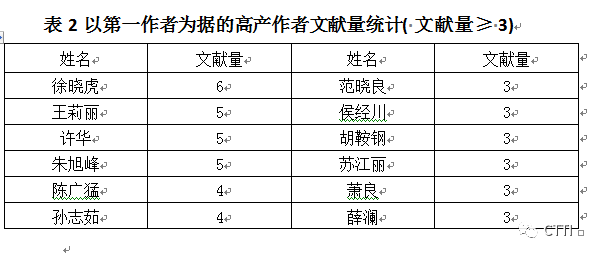
由表2可知，以第一作者为据进行统计，文献量最多的是来自南京航空航天大学经济与管理学院的徐晓虎。他从2012年开始在CSSCI上发表文献，所有的文献主题皆与智库相关，至今文献量达到6篇。并列第二的有王莉丽、许华、朱旭峰三人，文献量皆有5篇。王莉丽是中国人民大学副教授，主要研究领域有：思想库、政治传播、公共外交、环境传播等，著有《旋转门——美国思想库研究》（2010）、《智力资本：中国智库核心竞争力》（2015）等智库研究相关的著作。许华是中国社会科学院俄罗斯东欧中亚研究所的副研究员，研究领域为俄罗斯社会文化。朱旭峰是清华大学公共管理学院的教授，主要研究方向包括政策过程理论、思想库与专家参与、科技政策、气候与环境政策、转型与公共治理等。他的《中国思想库：政策过程中的影响力研究》（2009），无论是理论建构还是实证分析都代表着中国智库研究的里程碑。
经过对这些高产作者的背景进行分析得出，这些作者都是属于公共管理、政治科学和国际关系研究领域，他们大多数来自我国高校系统，少部分来自我国社科院和党校系统。
文献计量学中，洛特卡定律描述了科学工作者人数与其所著论文之间关系，即：写两篇论文的作者数量约为写一篇论文的作者数量的1/4；写三篇论文的作者数量约为写一篇论文作者数量的1/9；写N篇论文的作者数量约为写一篇论文作者数量的1/ N2……，而写一篇论文作者的数量约占所有作者数量的60%。因此笔者又对发文量在3篇以下的作者进行了统计，得出发文量为2篇的作者有16位，发文量为1篇的作者有159位。最后计算得出，发文量为3篇的作者数量占发文量为1篇的作者数量的比例约为1/27,，发文量为2篇的作者数量占发文量为1篇的作者数量的比例约为1/10，发文量为1篇的作者数量约占所有作者数量的85%，所有的数据都与洛特卡定律有较大的差距。同时，根据普赖斯定律所说，半数的论文为一群高生产能力作者所撰，但是该领域的高生产作者的发文总量为47篇，只占文献总量的20%，与定律所说的一半有很大差距。造成这些差距的原因是发文量为1篇的作者过多。文献计量学认为在一个研究领域发表1篇论文后就不再有新文献出现的作者属于“学科过客”。一个研究领域“学科过客”愈多说明该研究领域愈不成熟，学科过客数量与研究领域成熟度成反比关系。我国智库研究领域中发文量为1篇的作者高达85%，这说明该领域学术共同体尚未成熟，没有形成稳定的学术研究群体。同时从肯定性的视角看，智库研究正处于学科建制的快速发育期，充满了机会。
4
地区分布
对作者所在地区进行分析，是从空间上了解我国研究智库文献的分布特征，可以让直观地看出一个地区智库研究水平，以及地区间智库研究水平的差异。
此次统计以第一作者机构所在省（直辖市）为依据进行统计，由于在238篇文献中，有13篇文献未明确注明机构单位，无法获得机构所在地区，所以在分析中将其剔除。除此之外，有三篇文献为中外合作成果，且第一作者为外国人，剩余222篇注明机构单位信息的文献共涉及26个省（直辖市），图2是东中西三大地区文献量的比例图，表3显示了发文量不低于5的省（直辖市）统计结果，这样的省（直辖市）共有11个，约占全国所有省份数量的三分之一，图3是各地区文献量占总献总量的比例图。
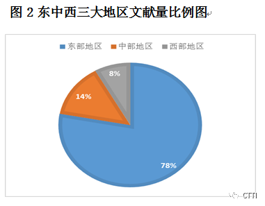
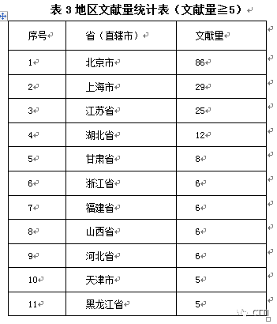
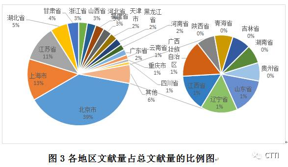
表3和图2、图3的表明，总体上，智库研究成果主要来源于在东部发达地区，东部地区智库研究文献量占总文献量的78%，处于绝对主导地位；中部地区文献量占总文献量的14%；西部地区文献量占总文献量的8%，远低于其他两个地区。这种现象说明了智库研究水平与地区发展水平基本保持正相关关系，尤其是和地区经济发展水平大体上为同步发展的关系。这是因为经济发达的地区，高校云集，科研院所集中，有足够的科研力量和资金支持。
具体而言，北京、上海、江苏是我国智库研究水平最高的省市，这三个地区的总文献量占到总数的63%左右。北京市目前是我国智库研究的中心城市，约1/3的文献量均发自北京市，而上海市也有较高的智库研究水平，但它29篇的文献量和北京市的86篇还是有较大的差距。笔者认为，北京作为我国的政治、文化和科研中心，它的这种优势地位会长期存在，短时间内难以被超越。
除此之外，值得注意是西部地区的甘肃省，虽然西部地区总体文献量不多，仅有18篇，但甘肃省的文献量就占8篇，约占西部地区总文献量的44%，文献量仅次于北京、上海、江苏、湖北，居第五。这是由于国家图书馆兰州分馆设立在甘肃兰州，该分馆张志强教授课题组对思想库特点、演变历史、影响力测评以及欧美思想库进行研究，发表过多篇相关论文。因此该地区的智库研究水平与东部发达地区基本持平，这说明经济水平并不是影响智库研究水平的唯一因素，科研实力尤其是高校、研究所水平也是重要的影响因素，有时候一个课题组就能改变某个研究领域的地缘知识版图，特别是对弱小的成长期的研究领域来说更是如此。
综上，一个地区的智库研究水平高低，和该地区的经济发展水平、科研实力和政治地位有着密切关系，其中科研实力尤其是该地区科研机构和高校的质量数量所产生的影响远远大于经济水平，是影响地区智库研究水平的主要因素。究其原因，一方面这与智库研究不像自然科学研究，对经费的需求较少有关，另一方面也是因为，我国的智库活动并不直接与生产活动相联系，智库服务对象主要是政府管理机构，智库研究某种程度上属于社会效益型研究，隐性收益远远大于直接的经济效益。
5
机构分析
对作者所在机构进行分析，有利于对我国的智库研究机构进行评价，了解我国当前智库研究机构的研究水平，探明我国在智库研究领域取得较大成就的研究机构。
与地区分析相同，去除无机构信息的13篇论文以及3篇国外论文，共有222篇文献注明了机构信息，这些文献共来自111个不同的研究机构，需要说明的是，为避免重复，本次机构分析以第一作者所在机构为研究对象。表4是文献量不低于5篇的机构统计表。
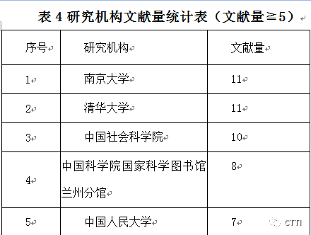
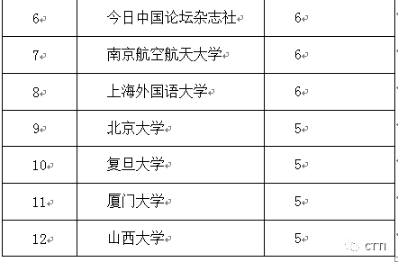
笔者分析认为，南京大学、清华大学、中国科学院和中国社会科学院是我国智库研究第一阶梯的研究机构，高质量研究成果数量较多，研究水平较高。其中南京大学和清华大学两所高校，均有11篇相关文献。南京大学有关智库的研究主要侧重于学习借鉴国外经验，进行国内外对比研究。其文献主要来自南京大学国际关系研究院和信息管理学院，这两个学院比较注重对智库进行研究，智库研究成为这两个学院的研究方向之一，尤其是信息管理学院成立了中国智库研究与评价中心，专门从事智库研究和评价工作。与南京大学不同，清华大学拥有相对稳定的作者群。薛澜，朱旭峰，胡鞍钢作为我国知名的智库研究专家，一直是清华大学智库研究活动的中坚力量。
在文献量高于5篇的研究机构中，较为独特是今日中国论坛杂志社。《今日中国论坛》是中国社会科学院主管的中央一级刊物时政类期刊，主要刊发时政分析研究的文章。今日中国论坛杂志社在智库研究领域也取得了一定建树，这进一步说明了智库与国家行政施政的密切关系。
图4
在对111个研究机构进行综合统计分析，可以将其分为四类，如图4所示，即高校、科研机构、政府部门和其他。其中61所高校共计发文132篇，约占总数的60%；科研机构共计发文58篇，占总数的26%，其中科学院与社会科学院共计发文38篇；政府机构发文量为20，主要以教育部门和党校部门为主；其他发文机构有如今日中国论坛杂志社、上海广播电视台、中国石油集团等此类机构。
可以认为，高校是我国智库研究的主体机构群，以清华大学和南京大学为代表的高校是我国进行智库研究的中坚力量。前文述及，科研实力是影响地区智库研究水平的主要因素，高校的数量和质量则是地区科研实力的集中体现，如图5是各高校文献量占高校总文献量的统计图。
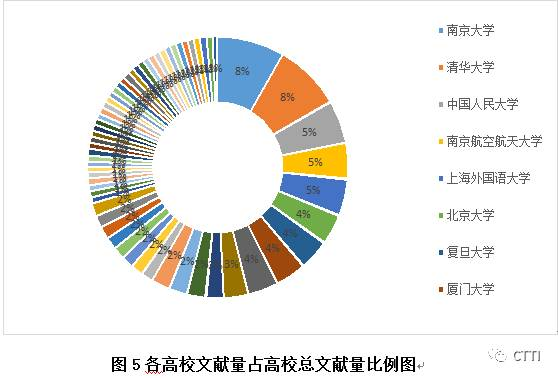
图5所列高校在智库研究领域中有着较高水平，也很有代表性。正如图中所示，进行智库研究的高校以综合性高校为主，少见工科学校，这是由智库研究的内容和智库自身的性质所决定的。
综上，高校和科学院与社会科学院是我国进行智库研究的两大主要类型的机构，而这两种类型的机构同时也是任何学科领域研究的支柱，在社会决策中，它们自身往往也充当着智库的角色。而智库研究也得到了国家职能机关、图书馆、党委党校等各种类型组织机构的关注，智库研究不是纯理论的研究，也不是纯应用性的研究，而是一种理论与实际并重，研究与实践并行的综合性研究体系。
6
主题分析
论文的关键词是对论文主要研究内容和主题的高度概括和凝练，是进行文献主题分析的重要途径。通过对论文关键词的统计分析，可以把握我国有关智库研究论文的主要研究方向，挖掘当前我国智库研究的热点。
1935年美国语言学家齐普夫通过统计分析大量的单词的出现频次，提出了文献计量学中著名的词频分布规律——齐普夫定律。齐普夫第二定律是关于低频词频次与词数关系的定律，1973年 Donohue根据齐普夫第二定律提出的高频低频词界分公式论文的关键词是对论文主要研究内容和主题的高度概括和凝练，是进行文献主题分析的重要途径。通过对论文关键词的统计分析，可以把握我国有关智库研究论文的主要研究方向，挖掘当前我国智库研究的热点。
1935年美国语言学家齐普夫通过统计分析大量的单词的出现频次，提出了文献计量学中著名的词频分布规律——齐普夫定律。齐普夫第二定律是关于低频词频次与词数关系的定律，1973年 Donohue根据齐普夫第二定律提出的高频低频词界分公式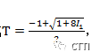 其中T为高频词和低频词的分界频次， _I 1_为出现一次的词的数量，高于T的为高频词，低于T的为低频词。因此，计算得出T=30，而大于30频次的只有“智库”和“思想库”两个，这不能反应出研究的问题。根据Excel软件统计，本文选取频次大于等于3的关键词列表，如表5所示。
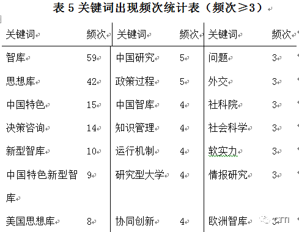
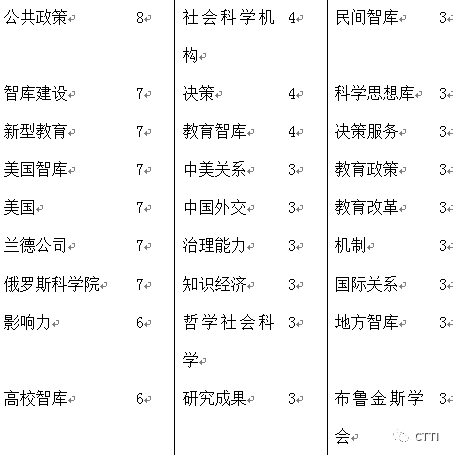
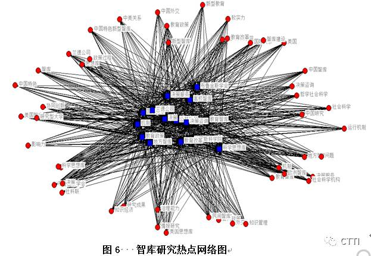
在所有238篇文献中，共有关键词586个，其中，出现频次2次及以上的关键词107个，占总数的18.26%，其中频次在3次及以上的关键词48个，如表6所示。高频关键词出现最多的是“智库”、“思想库”，而绝大部分关键词仅出现过一次，甚至出现“职能”、“机制”、“功能”等较为空泛的关键词。这一方面反映出当前我国智库研究的相关论文关键词提取能力有待提升，另一方面反映出当前智库研究范围广泛，研究方向多样，尚未有较为集中的主题。
此外，表3中出现了“公共政策”、“决策服务”、“决策咨询”、“政策过程”等涉及政府政策问题的高频关键词，为政府政策服务已经成为我国智库的重点和特色。图6是智库研究热点网络图，该图是基于关键词共词矩阵基础上，通过运用UNINET和Netdraw软件绘制而成的，其中蓝点代表智库研究热点，红色代表与之相关的智库研究方向。近些年来，众多智库文章研究焦点在于探讨我国智库服务政府工作、为国家政策提供智力支撑。这是因为智库作为一种强大的智力支撑，是国家软实力的重要组成部分。智库建设已经成为国家发展的需要。
为弥补软件工具统计分析的局限性，笔者通过对文献摘要内容的分析对比，发现“中国特色” 、“新型智库”、“中国特色新型智库”的研究主题基本一致，均是有关中国特色新型智库研究的文献。2015年1月20日，两办印发了《关于加强中国特色新型智库建设的意见》。短短一年时间，有关“中国特色新型智库”的研究文献如雨后春笋，可以预见，中国特色新型智库研究将是未来相当长的时间内智库研究的前沿热点。
除中国特色新型智库研究外，当前我国智库研究的主要方向还包括国外智库研究、智库功能研究、特定智库群体研究等。
智库作为一个“舶来品”，国外智库研究是我国智库研究的开端，也是最早的研究热点之一，其中多以美国智库为研究对象，对欧美智库的研究也有所涉及。可以说，美国智库是世界各国智库借鉴和学习的标杆，我国对美国智库的研究也以吸收引进先进的智库运行和管理经验模式为目的。如以“美国思想库”为关键词的文章多是早期我国引进思想库概念的研究成果。
发挥智库功能作用，服务社会主义建设是智库研究的根本目的，智库功能研究是智库研究的核心。智库功能研究属于实践性研究，主要包括智库决策咨询服务研究、宏观和微观的智库管理运营研究、成果管理研究、外交支持研究等具体的研究方向。当前智库研究主要集中于如何为政府决策提供更好咨询服务，决策咨询服务是智库的核心职能，其中，为政府决策提供智力支持是智库发挥咨询服务职能的重中之重。
特定智库群体研究是以某一类型的智库为研究对象，当前主要着眼点包括高校、社科院和民间智库。高校和社科院是当前我国主要的智库力量，尤其是高校智库，其数量众多，研究能力强，是智库研究关注的重要领域。民间智库是创新智库管理方式，充分发挥智库功能服务政府、企业和个人的重要形式，同时也是当前智库管理的盲点。加强特定智库群体研究是我国特色新型智库建设事业健康发展的重要保障。
综上所述，我国智库研究是一个生机勃勃的研究领域，但是无论理论研究、实证研究，还是实践研究都处于摸索阶段。学科建制（学会、专业期刊、研究机构和稳定的学者群体）发育刚刚起步，我们相信在中国特色新型智库建设的大背景下，随着学科建制的完善，智库研究的成果会越来越丰富。

来源：CTTI
筛选：晞哲
编辑：沉安
声 明
国政学人微信公众平台系非盈利学术平台。建立初衷是方便广大学人进行学术研究，促进学术的传播和交流，不做任何商业用途。如有任何权利问题，请直接与我们联系。
您可能还会喜欢：